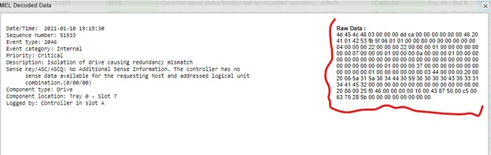

Isolation Of Drive Causing Redundancy Mismatch
If the following are true, a parity scan and repair on the affected volume can be performed:
- The volumes have Data Assurance turned on
- The error is only logged against one drive
- There are no other drive check conditions
Go to MEL and identify byte 33 within the raw data of the error.

Identify volume SSID within the Raw data. The byte 33. This value is in HEX and it must be converted into DEC. Use the Identificator Tool to get this data.
- Go to evfShowVol in State-Data-Capture with that value.
- Make sure the App tag field matches the HEX value obtained.
- Check the user label field to identify the volume.
- Run the following script using the script Editor in SANtricity desktop App: check volume ["VOLUME_NAME"] parity mediaErrorFile="C:\MediaError.txt" parityErrorFile="C:\ParityError..txt" priority=high verbose=true;
Note: You can change output location. This command may run up to 3 days. Need to wait until it completes. DO NOT HIT CANCEL IN THE POP UP WINDOW OF THE SCRIPT.
Note: This error could spread to more than a single volume.
- After completion run repair volume ["1"] parity parityErrorFile="C:\ParityError.txt" verbose=true; script. Request the parity error file after completion. This is usually faster than the checking process, however, there is not exact ETA.
Additional Information
Isolation of Drive Causing Redundancy Mismatch.